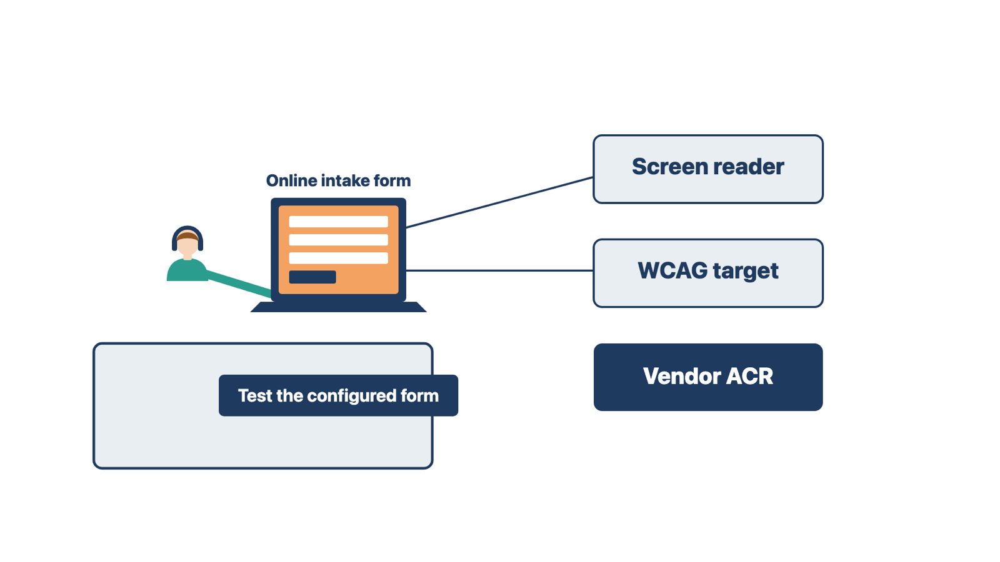

Accessibility means people with disabilities can use the system and the tools patients touch. If you wait until go-live to ask, the inaccessible form is already built and trained.
Patient-facing tools include the portal, online intake forms, check-in kiosks, text reminders, statements, and printed or emailed documents. Staff also need an accessible system to do their jobs. A screen reader is software that reads the screen aloud for people who are blind or have low vision.
Rule: Ask which accessibility standard applies during discovery, and record who decided.
You do not decide which law applies to the client. The client's compliance or legal authority decides. Your job is to ask, record the answer, and record who gave it. These are the sources you are most likely to hear:
Laws and dates in this area change. Check the current rule with the client's authority before you rely on any date here.
Ask the vendor for its Accessibility Conformance Report (ACR). An ACR is the vendor's own statement of how its product meets an accessibility standard. Most ACRs use the VPAT (Voluntary Product Accessibility Template). The current version is VPAT 2.5Rev, in four editions: 508, EU, WCAG, and INT (all three combined).
Read the ACR for the product version, date, standard, and every criterion marked "Partially Supports" or "Does Not Support." Those are the gaps.
An ACR describes the vendor's product. It does not prove that your configured forms, templates, and messages are accessible. A custom intake form can fail even when the base product passes. Plan to test the configured workflow, with representative users where the client can arrange it.
Add an accessibility entry to the requirements and decision record:
| Field | Example entry |
|---|---|
| Applicable law, contract, or policy | Section 504; confirmed by compliance lead, date |
| Target standard and level | WCAG 2.1 Level AA |
| Scope | Portal, intake forms, kiosk, statements, staff screens |
| Vendor evidence | ACR, VPAT edition, product version, date, listed exceptions |
| Validation plan | Configured-workflow testing and user testing |
| Alternate access | Staff-assisted intake, phone, large print |
| Remediation owner and date | Named person |
| Acceptance authority | Named client role |
Do not say the system "is compliant." That is a conformance claim. Only the client's authority can make it, and only for a defined scope and date.
Compare two cases. A county clinic's nurse says accessibility is "IT's problem after go-live." You ask the compliance authority which rule applies and record the answer now. At a private clinic, the vendor's ACR passes, but your custom intake form has not been tested. You plan a test of the configured form. The shared rule: the client's authority names the target, and you test what you built.

The future state is how the work will happen in the new system. A design that adds steps or drops controls fails either the staff or the patient. Aim for the simplest safe, approved flow that meets the purchased outcome.
Simpler means fewer needless steps, handoffs, duplicate entries, queues, and places to lose information. It does not mean removing controls.
Work through the future state in this order:
Automation can make a sound process faster. It can also make a poor process fail faster. Keep a list of automation candidates during discovery. Do not build the automation until the workflow, information, authority, exception path, and monitoring owner are approved.
Rule: Do not automate a process that is broken or not yet decided.
Compare two cases. A clinic wants an automatic reminder for overdue referrals, and the referral workflow and its owner are approved. The reminder goes on the build list. Another clinic wants automatic routing of portal messages, but no one has decided who answers billing questions. The routing waits. The shared rule: decide the work first, then automate it.
Check yourself
Access decides who can see and change patient information. If you copy the old system's access, you may copy old mistakes into the new one.
Ask what each role needs to view, create, change, approve, export, or delete. Use the organization's least-privilege or minimum-necessary approach as it applies. Both mean giving each role only the access its work needs. Do not copy the old system's access just because it is familiar.
Involve the organization's privacy and security authorities. Account for PHI in electronic form, audit controls, availability, and patient-safety needs. The implementer records and configures the approved access model. The privacy and security authorities approve it.
Rule: Give each role only the access its work needs, as approved by privacy and security.
Check yourself